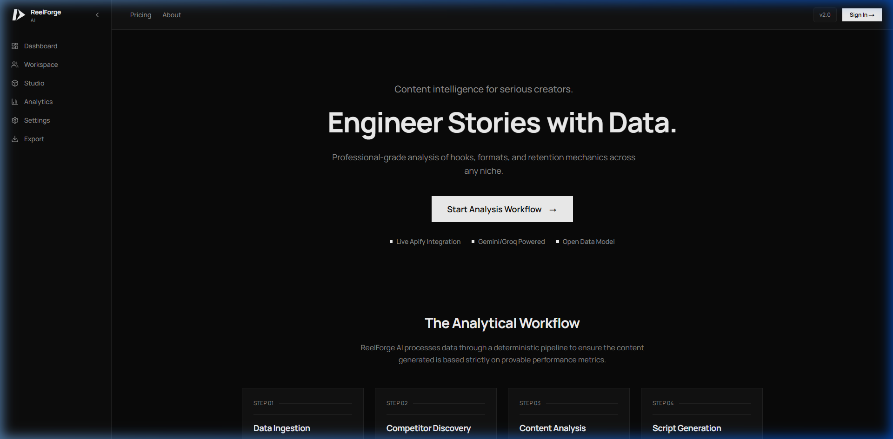
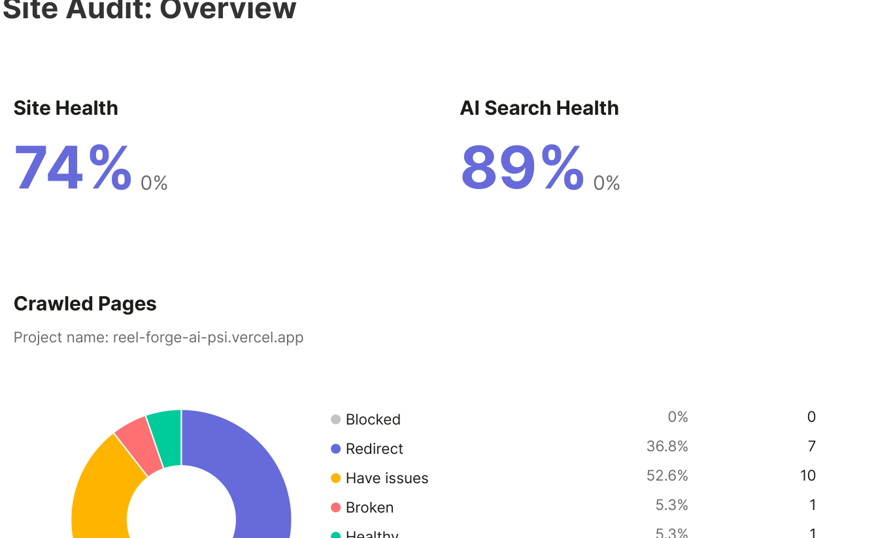
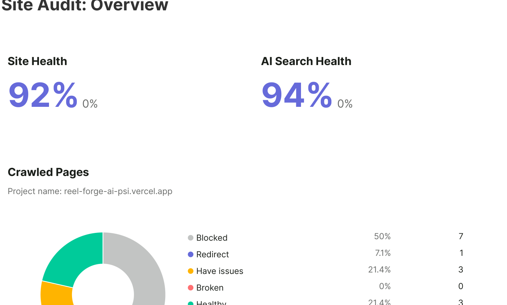
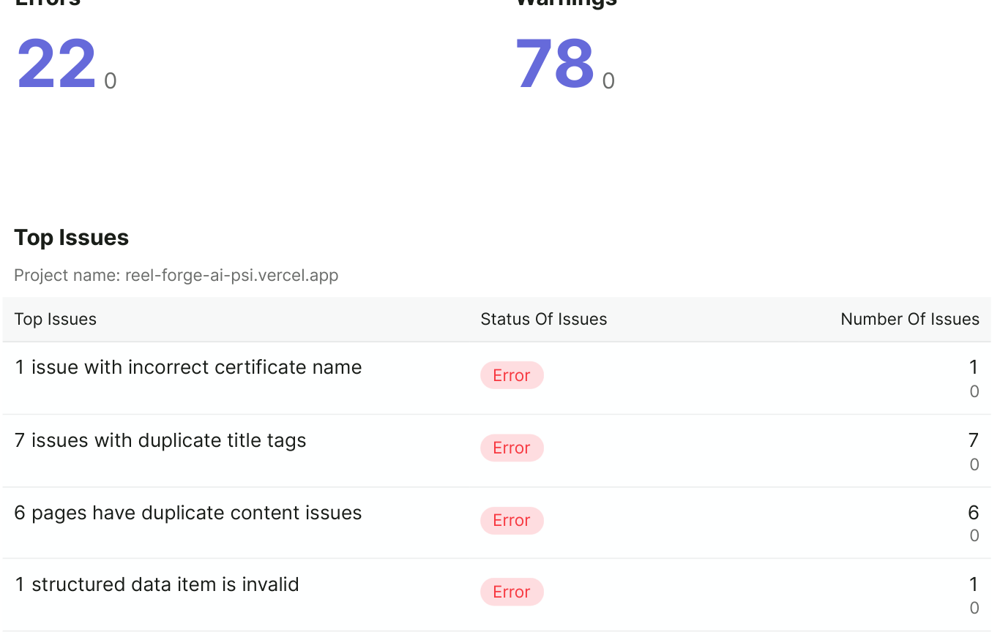
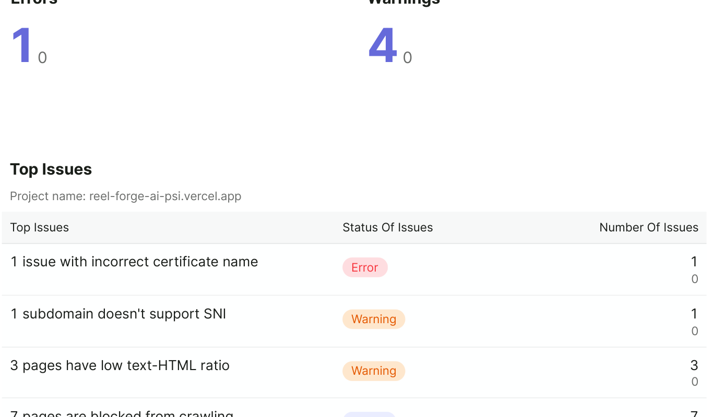
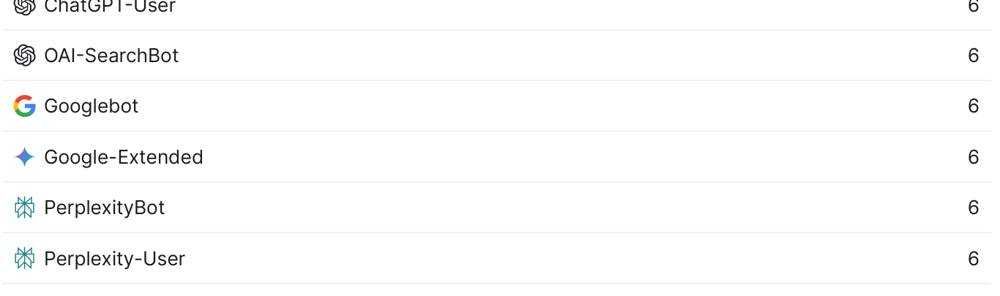

ReelForge AI — Technical SEO & AI Search Optimization
Visibility, rethought. From Semrush crawl diagnosis to code-level Next.js remediation and AI search evaluation.

Project Overview
ReelForge AI is an AI-powered content intelligence product. I conducted a technical SEO and AI search audit of its website using Semrush, investigated the identified issues with ChatGPT, and implemented code-level improvements using Antigravity IDE.
The goal was to improve technical website health, resolve duplicate metadata and content issues, and strengthen the website's technical foundations for search discovery.
The Challenge
The initial Semrush audit identified technical SEO issues, including duplicate title tags, duplicate content, duplicate meta descriptions, redirects and broken pages.
These issues needed to be investigated and addressed without compromising the existing website architecture, functionality or user experience.
19 URLs crawled uncovered a 74% Site Health score and 89% AI Search Health score, with 22 technical errors (including 7 duplicate title-tag errors, 6 duplicate content errors, and 7 duplicate meta descriptions) and 78 warnings.
My Four-Step Optimization Approach
A disciplined cycle moving from objective crawler diagnosis to code-level fix and transparent re-audit.
Audit & Diagnosis
Used Semrush Site Audit to establish a baseline and identify technical errors, website health indicators and AI search-related diagnostics across indexable routes.
Investigate Root Causes
Used ChatGPT to help investigate route-parameter collisions, canonical tag behaviour, duplicate page signals and potential causes of the reported issues.
Code-Level Improvements
Used Antigravity IDE to inspect and modify relevant website code, including SEO metadata, canonical headers, and page-level implementation.
Re-audit & Evaluate
Ran a follow-up Semrush audit and compared the reported health scores and issue counts with the baseline, accounting for the different crawl scopes.
| Audit Metric | Baseline — Oct 20, 2026 | Follow-up — Oct 21, 2026 | Status & Impact |
|---|---|---|---|
| Semrush Site Health | 74% | 92% | +18% Health Score |
| Semrush AI Search Health | 89% | 94% | +5% Health Score |
| Pages Crawled (Audit Scope) | 19 pages | 14 pages | Refined crawl to core indexable routes |
| Duplicate Title-Tag Errors | 7 errors | 0 errors | 100% Resolved (-7) |
| Duplicate Content Errors | 6 errors | 0 errors | 100% Resolved (-6) |
| Duplicate Meta-Description Errors | 7 errors | 0 errors | 100% Resolved (-7) |
| Reported Technical Errors | 22 errors | 1 error | -21 Errors (-95%) |
| Reported Warnings | 78 warnings | 4 warnings | -74 Warnings (-95%) |
Authentic Semrush PDF Audit Evidence
Unedited report screenshots extracted from the original baseline and post-remediation Semrush documentation.




Six Pages Blocked from AI Search Bot Crawling
The follow-up report identified six pages as blocked from AI search for the listed bots, including ChatGPT-User, OAI-SearchBot, Googlebot, Google-Extended, PerplexityBot, Perplexity-User, and Claude-User. This indicates server-side or crawler-specific header rules that require further technical investigation.

Results & What the Evidence Shows
The available reports document improvements in Semrush's reported technical health scores (74% → 92% Site Health, 89% → 94% AI Search Health) and the resolution of the listed duplicate metadata and content errors across the audited routes.
- No Organic Traffic Growth: Technical health score improvements do not prove increased search visitors.
- No Higher Keyword Rankings: Resolving crawl errors does not guarantee top positions on SERPs.
- No Increased AI Citations: AI search health scores reflect crawler formatting hygiene, not live citation frequency.
- No Leads or Revenue Claims: No commercial revenue or user conversions are attributed to these audit scores.
Next Steps
Technical SEO audits establish crawl hygiene and format compliance, which is a necessary foundation for discovery, but ongoing real-world validation is essential.
- 1 Investigate server-side crawler access rules and robots.txt or relevant headers for AI user-agents.
- 2 Validate canonical and indexability signals in Google Search Console once query impression data accumulates.
- 3 Use Google Search Console data when available to evaluate indexing and organic search performance.
- 4 Monitor technical health as the product evolves and new feature routes are added.